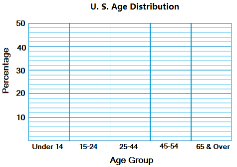
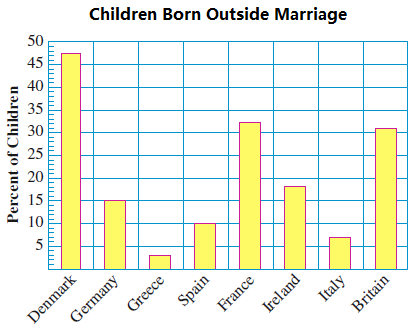
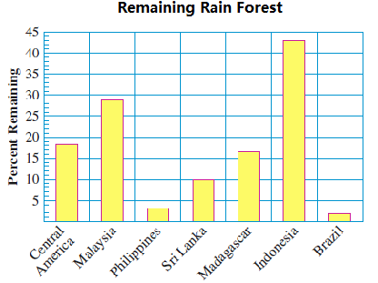
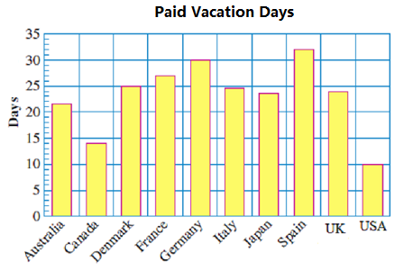

We live in a world of change. The numbers we use to measure our world change, too. The temperature and humidity of the environment change day-by-day, as do prices on the stock market. We monitor our blood pressure and cholesterol count to detect changes in our health. The connections between variable quantities help us understand the forces that shape our world.
Example2.3.1.
Consider the table below. Do you see a pattern that relates Delbert’s age to Francine’s age?
Francine’s age
Delbert’s age
10
16
13
19
17
23
Yes: Delbert’s age is always six more than Francine’s age.
Write a mathematical sentence that expresses Delbert’s age in terms of Francine’s age.
Yes, the discount price is $2 less than the regular price.
Discount price \(=\) Regular price \(-\) $2
Looking for Patterns.
Did you see the pattern relating the Discount price to the Regular price in Checkpoint 2.2.3? When we look for a pattern we can check several possibilities:
Is there a constant number we can add to or subtract from the first variable to get the second variable?
Can we multiply or divide the first variable by a constant to get the second variable?
Is the sum or the product of the two variables a constant?
Example2.3.4.
In the table below, do you see a pattern that relates the total utility bill to your share?
Utility Bill ($)
Your Share ($)
28
7
36
9
42
10.50
Yes: Your share is one fourth of the total bill, so you can divide the total bill by 4 to find your share.
Write a mathematical sentence that expresses your share of the bill in terms of the total bill.
Fill in the table showing the number of new homes sold each month.
Month
Houses Sold
Month
Houses Sold
January
25
July
35
February
15
August
30
March
20
September
20
April
20
October
35
May
30
November
10
June
40
December
5
Here is a bar graph that shows the values of two variables.
Example2.3.8.
In the 1990’s, when cell phones first became available, Motorola and Nokia were competing phone companies. The bar graph shows the portion of the market captured by each company from 1994 to 2000.
What was Motorola’s share of the market in 2000? \(~~~~~~\blert{\text{15%}}\)
In which year shown did Motorola have a 24% market share? \(~~~~~~\blert{\text{1997}}\)
In which of the years shown did Motorola have its largest market share? What was that share?
\begin{equation*}
\blert{\text{In 1994 Motorola had 33% of the market.}}
\end{equation*}
By how much did Motorola’s market share exceed Nokia’s in 1995?
The table shows the age distribution of the U.S. population in 1900 and in 2015.
Age Group
% of Population in 1900
% of Population in 2015
Under 14
34
12
15 t0 24
20
21
25 to 44
28
26
45 to 54
14
26
5 and over
4
15
Which was the largest age group in 1900? In 2015?
What percent of the population was under 25 in 1900? In 2015?
What percent of the population was over 44 in 1900? In 2015?
Make a double bar graph displaying the information in the table.

In your opinion, what is the most striking change in the age distribution of the U. S. population form 1900 to 2015? How is that change illustrated by the bar graph?
Subsection2.3.3Using Letters for Variables
We often use a single letter to represent a variable quantity. In Example 2.3.10, the variables are Jayson’s age and Shawna’s age.
Example2.3.10.
Shawna was 22 years old when her son Jayson was born.
Fill in the table.
Jayson’s age
1
4
7
12
18
(Calculation)
\(1+22\)
\(4+22\)
\(7+22\)
\(12+22\)
\(18+22\)
Shawna’s age
23
26
29
34
40
Explain how to find Shawna’s age if you know Jayson’s age.
\begin{equation*}
\blert{\text{Add 22 to Jayson's age.}}
\end{equation*}
Write a mathematical sentence for Francine’s age.
Check that your expression for Shawna’s age gives the correct values when we replace Jayson’s age by \(\alert{a}\) in the table in part (a).
\(\blert{a}\)
1
4
7
12
18
\(\blert{a+22}\)
23
26
29
34
40
Note2.3.11.
A letter used as a variable must always stand for a number. In Example 2.3.10, the variable \(\alert{a}\) stands for Jayson’s age, which is a number. We cannot let a variable stand for, say, "Jayson," or for any other person or object.
Checkpoint2.3.12.
A belt should be 3 inches longer than the maximum waist size it can fit.
Fill in the table below.
Waist size (inches)
24
28
32
36
(Calculation)
Belt length (inches)
\(\hphantom{00000}\)
\(\hphantom{00000}\)
\(\hphantom{00000}\)
\(\hphantom{00000}\)
Explain how to find the belt length if you know the waist size.
Write a mathematical sentence for the belt length.
Belt length =
Let \(\alert{w}\) stand for the waist size in inches, and write an expression for the belt length in terms of \(\alert{w}\text{.}\)
Put your expression for the belt length into the table, and check that it gives the same values as those in the table in part (a).
For Problems 1-8, write mathematical sentences relating the variables.
1.
Write a mathematical sentence thatexpresses the number of laps Shirleyhas swum in terms of the number oflaps Janet has swum.
Janet’s laps
Shirley’s laps
18
10
22
14
30
22
Shirley’s laps =
2.
Write a mathematical sentence that expresses the number of miles Cara has bicycled in terms of the number of miles Jamil has bicycled.
Jamil’s miles
Cara’s miles
2
5
6
9
12
15
Cara’s miles =
3.
Write a mathematical sentence thatgives the number of batteries in terms of the number of packages.
Packages
Batteries
5
30
8
48
12
72
Number of batteries =
4.
Write a mathematical sentence that gives the number of study groups in terms of the number of students.
Students
Study Groups
20
5
28
7
40
10
Number of study groups =
5.
Write a mathematical sentence that tells how many pages you have left to read out of a 200-page assignment.
Pages read
Pages left
30
170
85
115
160
40
Number of pages left =
6.
Write a mathematical sentence that tells tells how many minutes are left in a two-hour (120-minute) game.
Minutes played
Minutes left
15
105
40
80
97
23
Number of minutes left =
7.
Write a mathematical sentence that tells expresses the amount of your wages in terms of the number of hours you worked.
Hours worked
Wages
5
35
12
84
20
140
Wages =
8.
Write a mathematical sentence that tells expresses your weekly study hours in terms of the number of units you are enrolled in.
Units
Study hours
6
18
12
36
18
54
Number of study hours =
9.
The bar graph shows the percent of children born outside of marriage in various European countries.

What variable is displayed in this graph?
What percent of children are born outside of marriage in Germany?
In which country are 18% of children born outside of marriage?
In which country is the largest percent of children born outside of marriage?
In which country is the smallest percent of children born outside of marriage?
10.
The bar graph shows the percent of the original rain forest that remains in several areas that are undergoing heavy deforestation.

What variable is displayed in this graph?
What percent of the Central American rain forest remains?
In what region does only 3% of the rain forest remain?
In what region is the largest percent of the original rain forest left?
In what region is the smallest percent of the original rain forest left?
11.
The bar graph shows the average temperature in Chicago during each month of the year.
What variable is displayed in this graph?
What is the average temperature during October?
In what month is the average temperature 59\(\degree\text{?}\)
Which month experiences the greatest temperature increase over the previous month?
Which month experiences the greatest temperature decrease over the previous month?
12.
The bar graph shows the average precipitation (in inches) each month in Tampa, Florida.
What variable is displayed in this graph?
In which month does Tampa receive the most precipitation?
In which month does Tampa receive the least precipitation?
What is the increase in precipitation from April to May?
What is the decrease in precipitation from September to October?
13.
The bar graph shows the leading causes of accidental deaths for children under five years of age. (Note that in this bar graph, the bars are horizontal instead of vertical.)
Make a table showing the number of deaths for each cause.
What caused the most deaths for children under age 5?
About 3400 accidental deaths of children under age 5 were recorded. What fraction of those deaths were caused by drowning? (Round your answer to the nearest thousandth.)
How many accidental deaths were due to causes other than those shown in the bar graph?
14.
The bar graph shows the number of annual paid vacation days received by workers in ten industrial nations.

In which nation do workers receive the most vacation days? In which nation do they receive the fewest?
Make a table showing the number of vacation days in each country. List the countries in order from most vacation days to fewest.
How many more vacation days would you get in France than in Australia?
Which countries get at least double the amount of vacation we get in the United States? Do any countries get double the amount of vacation Canadians get?
15.
The bar graph shows the average life expectancy in various countries in 1900 and now. (Life expectancy is the average age to which people can expect to live.)
Which country had the highest life expectancy in 1900? Which had the lowest?
Which country has the highest life expectancy now? Which has the lowest?
Which country experienced the greatest increase in life expectancy over the last century? By how many years?
How much has the gap in life expectancy among the countries listed decreased over the last century?
16.
The bar graph shows the average weekly working hours in various countries in 1900 and now.
Which country had the longest average work week in 1900? Which had the shortest?
Which country has the longest average work week now? Which has the shortest?
In which country did the number of working hours decrease the most over the last century? By how many hours?
How much has the gap in working hours among the countries listed increased over the last century?
17.
What is the difference between a variable and a constant?
18.
How does a bar graph display the values of a variable?
Exercise Group.
For Problems 19-24, use letters to represent the variable quantities.
19.
Yasmin needs \(9 \dfrac{1}{2}\) hours per week to study for her math class.
If Yasmin has 15 study hours per week, how many hours does she have for her other classes?
Explain how to find the number of study hours Yasmin has for her other classes if she has \(t\) hours of weekly study time.
Fill in the table for the given values of \(t\text{.}\) (Hint: First subtract 9 from the value of \(t\text{,}\) then subtract \(\dfrac{1}{2}\) from the result.)
\(t \hphantom{000}\)
16 \(\hphantom{000}\)
20 \(\hphantom{000}\)
25 \(\hphantom{000}\)
31 \(\hphantom{000}\)
\(t - 9\dfrac{1}{2}\)
20.
Rose and her two sisters, Iris and Violet, plan to sell the family farm and move to Florida. They will divide the money from the sale equally.
How much will Rose get if they make $30,000 on the sale?
Explain how to find Rose’s share if they make \(s\) dollars.
Fill in the table for the given values of \(s\text{.}\)
\(s \hphantom{000}\)
36,000
45,000
51,000
114,000
\(\dfrac{s}{3}\)
21.
Kranberry Kooler is 10% cranberry juice.
How much cranberry juice is in 15 quarts of Kranberry Kooler?
Explain how to find the number of quarts of cranberry juice needed for \(q\) quarts of Kranberry Kooler.
Fill in the table for the given values of \(q\text{.}\)
\(q \hphantom{000}\)
20
45
260
1250
\(0.10 \times q\)
22.
The registrar at City College predicts a 4% enrollment increase for all departments next year.
If the English department has 5200 students enrolled this year, how many should they expect next year?
Explain how a department with \(p\) students this year can predict next year’s enrollment.
Fill in the table for the given values of \(p\text{.}\)
\(p \hphantom{000}\)
600
1300
2200
3500
\(1.04 \times p\)
23.
Human hair grows approximately 0.085 centimeters per day. Sinead shaved her head this morning.
How long will Sinead’s hair be after 30 days?
Explain how to find the length of Sinead’s hair after \(t\) days.
Fill in the table for the given values of \(t\text{.}\)
\(t \hphantom{000}\)
\(\hphantom{0}\)7\(\hphantom{0}\)
60\(\hphantom{0}\)
200
360
\(0.085\times t\)
24.
Camilla wants to deposit her savings of $2000 into a one-year T-bill.
How much will Camilla’s savings earn if the T-bill earns 7% interest?
Explain how to compute Camilla’s interest if the T-bill pays an interest rate of \(r\text{.}\)
Fill in the table for the given values of \(r\text{.}\)
\(r \hphantom{000}\)
6%
6.5%
8%
10%
\(2000\times r\)
Exercise Group.
For Problems 25-30, you may skip parts (b) and (c) if you can answer part (d) without them!
25.
Mariel is driving 400 miles to her sister’s house.
Fill in the table below.
Miles driven
80
150
225
310
Miles left
Explain how to find the number of miles Mariel has left to drive if you know how many miles she has driven.
Write a mathematical sentence for the number of miles left to drive:
Miles left =
Let \(d\) stand for the number of miles Mariel has driven, and write an expression for the number of miles she has left in terms of \(d\text{.}\)
Miles left =
26.
Delbert has a coupon for $12 off at Video World.
Fill in the table below.
Regular price
18
25
76
130
Delbert’s price
Explain how to find Delbert’s price if you know the regular price.
Write a mathematical sentence for what Delbert pays:
Delbert’s price =
Let \(p\) stand for the regular price, and write an expression for Delbert’s price in terms of \(p\text{.}\)
Delbert’s price =
27.
Adria’s diet allows one-fifth of her total daily calories to come from fat.
Fill in the table below.
Total calories
1200
1225
1500
1800
Calories from fat
Explain how to find the number of calories from fat allowed if you know how many calories Adria plans to eat.
Write a mathematical sentence for the number of calories from fat:
Calories from fat =
Let \(c\) stand for the regular price, and write an expression for the number of calories from fat allowed in terms of \(c\text{.}\)
Calories from fat =
28.
Marvin goes to a restaurant with three friends and agrees to split the bill equally.
Fill in the table below.
Total bill ($)
36
44
56
72
Marvin’s share ($)
Explain how to find Marvin’s share of the bill.
Write a mathematical sentence for Marvin’s share of the bill:
Marvin’s share =
Let \(B\) stand for the regular price, and write an expression for Marvin’s share in terms of \(B\text{.}\)
Marvin’s share =
29.
Marvin and his friends from Problem 28 agree to tip 15% of the total bill.
Fill in the table below.
Total bill ($)
32
48
52
60
Tip ($)
Explain how to find the tip.
Write a mathematical sentence for Marvin’s share of the bill:
Tip =
Let \(B\) stand for the total bill, and write an expression for the tip in terms of \(B\text{.}\)
Tip =
30.
Rae has been collecting quarters to take to the bank.
Fill in the table below.
Number of quarters
15
32
68
100
Value of quarters ($)
Explain how to find the value of the quarters if you know how many quarters Rae has.
Write a mathematical sentence for the value of the quarters, in dollars:
Value of quarters =
Let \(Q\) stand for the total bill, and write an expression for the value of the quarters in terms of \(Q\text{.}\)
Value of quarters =
31.
Francine is saving up to buy a car, and deposits \(\dfrac{1}{5}\) of her spending money each month into a savings account.
If \(m\) stands for Francine’s spending money, write an expression for the amount she saves.
Amount Francine saves =
If Francine has $120 spending money, how much will she deposit into the savings account?
32.
The Pep Club donates \(\dfrac{1}{6}\) of the money it raises to charity.
If \(R\) stands for the amount of money the Pep Club raised, write an expression for the amount they donated to charity.
Amount donated =
If the Pep Club raised $240 how much will did they donate to charity?
33.
Delbert wants to enlarge his class photograph. Its height is \(\dfrac{1}{4}\) of its width. The enlarged photo should have the same shape as the original.
If \(W\) stands for the width of the enlargement, write an expression for its height.
Height =
If the width of the photo is 10 inches, what if its height?
34.
The amount of soy flour in Lucy’s protein bread is \(\dfrac{1}{8}\) of the amount of wheat flour.
If \(w\) stands for the amount of wheat flour, write an expression for the amount of soy flour.
Amount of soy flour =
If Lucy uses 6 cups of wheat flour, how much soy flour will she need?
35.
If the governor vetoes a bill passed by the State Assembly, \(\dfrac{2}{3}\) of the members present must vote for the bill in order to overturn the veto.
If \(p\) stands for the number of Assembly members present, write an expression for the number of votes needed to overturn a veto.
Votes needed =
If 147 members are present, how many votes are needed to overturn a veto?
36.
The case for a Blu Ray disk is \(\dfrac{3}{8}\) inch thick. You keep your disks lined up side-by-side on a bookshelf.
If you own \(n\) disks, write an expression for the length of shelf space you will need.
Length of shelf space =
If you own 32 disks, how much shelf space will you need?